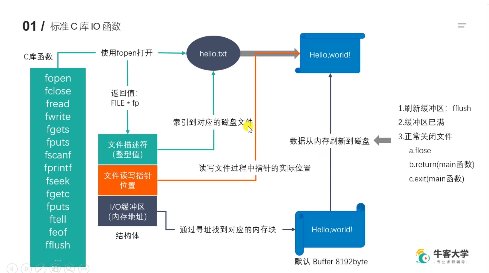

webServer
今天开始正式补充完善webServer服务器的内容！想到哪写到哪吧，回头再做整合。
标准C库IO函数

项目难点
1 | /* |
HTTP请求处理
http_conn头文件
1 | class http_conn{ |
我们在http_conn类里主要设置五个对外的接口：
初始化新接受的连接
1
2
3
4
5
6
7
8
9
10
11
12void init(int sockfd, const sockaddr_in &addr);
/*
我们会把所有事件注册到一张内核事件表上，因此定义一个内核事件就好了。static int m_epollfd;
同时我们会统计当前连接数，同样是使用一个静态变量，所有实例对象共享。static int m_user_count;
每建立一个新连接，m_user_count就会加1；
当我们向内核事件表注册一个事件时，我们需要考虑我们所要监听的事件类型，这里我们考虑：
读事件（EPOLLIN）、边沿触发模式（EPOLLET）、以及EPOLLRDHUP（检测TCP对端连接的关闭或者半关闭状态）
为了配合ET模式和多线程，我们需要做两个操作，第一是将所监听的文件描述符设置为非阻塞的，第二需要设置为EPOLLONESHOT类型
注意：我们对m_epollfd和m_user_count的初始化分别为
*/
int m_epollfd = -1;
int m_user_count = 0;设置非阻塞函数
1
2
3
4
5
6
7// 代码示例：Linux高性能服务器编程 p113
int setnonblocking(int sockfd){
int old_option = fcntl(sockfd, F_GETFL); // 获取文件描述符旧的状态标志
int new_option = old_option | O_NONBLOCK; // 设置非阻塞标志
fcntl(sockfd, F_SETFL, new_option);
return old_option; // 返回文件描述符旧的状态标志，以便日后恢复该状态标志
}设置感兴趣事件类型
1
2
3
4
5
6
7
8
9
10
11
12// 我们在向内核事件表注册新事件的时候，需要指定自己对这个文件描述符上发生的什么事件感兴趣
// 可读？可写？
void addfd(int epollfd, int fd, bool one_shot){
epoll_event event;
event.data.fd = fd;
event.events = EPOLLIN | EPOLLET | EPOLLRDHUP;
if(one_shot){
event.events |= EPOLLONESHOT;
}
epoll_ctl(epollfd, EPOLL_CTL_ADD, fd, &event);
setnonblocking(fd);
}初始化函数代码实现
1
2
3
4
5
6void http_conn::init(int sockfd, const sockaddr_in &addr){
m_sockfd = sockfd;
m_address = addr;
addfd(m_epollfd, sockfd, true);
m_user_count++;
}关闭连接
1
2
3
4
5
6
7void close_conn(bool real_close);
/*
我们可以思考一下有关关闭连接需要涉及到哪些操作。
1、首先，如果一个连接关闭了，我们需要将其从内核事件表上移除
2、当前连接数目也会减一
这里我们准备先实现一个从内核事件表上移除文件描述符的函数（void removefd），在实现关闭连接
*/移除文件描述符
1
2
3
4void removefd(int epollfd, int fd){
epoll_ctl(epollfd, EPOLL_CTL_DEL, fd, 0);
close(fd);
}关闭连接
1
2
3
4
5
6
7void http_conn::close_conn(bool real_close){
if(real_close && m_sockfd != -1){
removefd(m_epollfd, m_sockfd);
m_sockfd = -1;
m_user_count--;
}
}处理客户请求
1
2
3
4
5
6void process();
/*
关于如何处理客户连接请求的问题，我们从最原始的地方出发。
首先，你了解一个http请求的基本格式吗？因为我们只有在了解http请求的通用格式后才知道如何对其进行解析
下面，我将展示一个最基本的GET请求格式
*/1
2
3
4
5
6
7
8
9
10
11
12
13
14
15
16
17
18
19
20
21
22
23
24
25
26
27
28
29
30
31
32
33
34
35
36
37
38
39
40
41
42
43
44GET /path/to/resource?param1=value1¶m2=value2 HTTP/1.1
Host: www.example.com
User-Agnet: Mozilla/5.0 (platform; rv:geckoversion) Gecko/geckotrail Firefox/firefoxversion
Accept: text/html,application/xhtml+xml,application/xml;q=0.9,image/webp,*/*;q=0.8
Accept-Language: en-US,en;q=0.5
Accept-Encoding: gzip, deflate, br
Connection: keep-alive
# 关于这个GET请求的详细解释我提一个chatgpt的解释在这，可以阅读一下
下面是逐行详细解释：
1. `GET /path/to/resource?param1=value1¶m2=value2 HTTP/1.1`
- `GET`: 这是HTTP请求的方法。`GET` 方法用于请求指定的资源。与POST相比，GET请求是只读的，并且用于获取数据而不是发送数据。
- `/path/to/resource`: 这是请求的资源路径，通常是文件或者其他资源的位置。
- `?`: 这个符号表示URL的查询部分的开始。
- `param1=value1¶m2=value2`: 这是查询字符串。在此例中，有两个参数，`param1`和`param2`，它们的值分别是`value1`和`value2`。`&`符号用于分隔查询参数。
- `HTTP/1.1`: 表示使用的HTTP版本，这里是1.1。
2. `Host: www.example.com`
- `Host`: 这是HTTP头的名称。它指定了请求的目标主机和域名。
- `www.example.com`: 请求的目标域名。
3. `User-Agent: Mozilla/5.0 (platform; rv:geckoversion) Gecko/geckotrail Firefox/firefoxversion`
- `User-Agent`: 这是HTTP头的名称。它描述了发出请求的用户代理的类型，通常是浏览器。
- `Mozilla/5.0`: 这是用户代理的一般标记。虽然名为Mozilla，但它并不仅仅代表Mozilla浏览器，大多数浏览器都会以这种方式标识。
- `(platform; rv:geckoversion)`: 这部分提供了关于用户代理的详细信息，例如它在哪个平台上运行。
- `Gecko/geckotrail`: 这是Gecko渲染引擎的标识及其版本。
- `Firefox/firefoxversion`: 表示用户代理是Firefox浏览器，后面跟着其版本。
4. `Accept: text/html,application/xhtml+xml,application/xml;q=0.9,image/webp,*/*;q=0.8`
- `Accept`: HTTP头名称，表示客户端可以处理的内容类型。
- 该头的值列出了浏览器接受的MIME类型，按照优先级排序。例如，`text/html` 表示HTML文档，而`q=0.9`表示相对优先级。
5. `Accept-Language: en-US,en;q=0.5`
- `Accept-Language`: HTTP头名称，表示用户代理偏好的自然语言。
- `en-US,en`: 这指示用户代理首先希望接收美国英语的内容，其次是英语。
6. `Accept-Encoding: gzip, deflate, br`
- `Accept-Encoding`: HTTP头名称，表示用户代理可以接受的内容编码。
- `gzip, deflate, br`: 这些是可以接受的编码方法，用于内容压缩。
7. `Connection: keep-alive`
- `Connection`: HTTP头名称，表示是否持续连接。
- `keep-alive`: 表示浏览器希望服务器保持连接，以便于后续的请求可以复用相同的TCP连接。
这个请求大体上是一个典型的HTTP GET请求，由HTTP方法、资源路径、HTTP版本、多个头字段组成。每个头字段都有其特定的语义和目的。现在我们知道了HTTP请求格式了，那么到底如何解析它呢？这里就要引入一种叫做“有限状态机”的方法了，有关这个方法的具体描述与实现，大家可以看我的另一篇文章。
非阻塞读操作
非阻塞写操作
第一个知识点：iovec
这里先介绍一个iovec结构体，因为我们在写HTTP响应的时候需要用到。
1 |
|
1 | int readv(int fd, const struct iovec *vector, int count); |
下面给出一个应用实例
1 |
|
第二个知识点：va_list, vsnprintf
参考链接：https://blog.csdn.net/dengzhilong_cpp/article/details/54944676
参考链接：https://blog.csdn.net/luliplus/article/details/124123219
以上是今天要写代码的基础知识，下面开始正式代码
1 | /*写HTTP响应*/ |